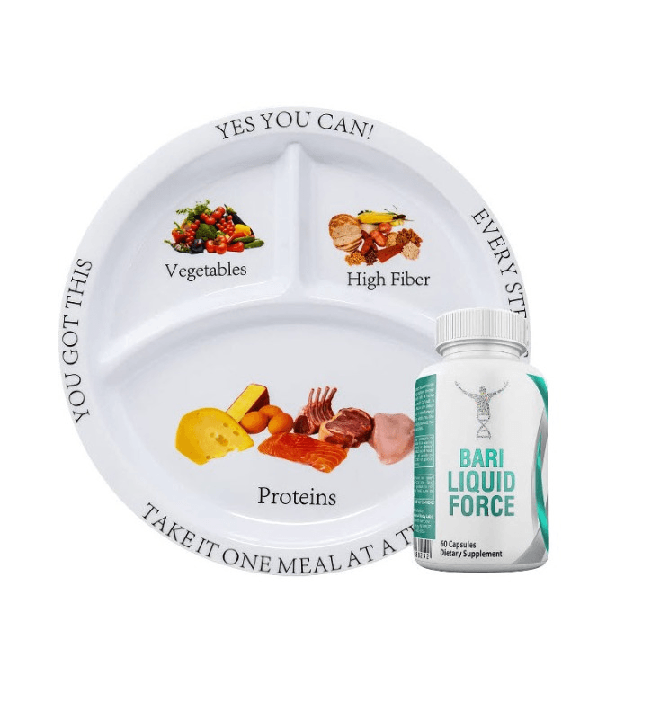
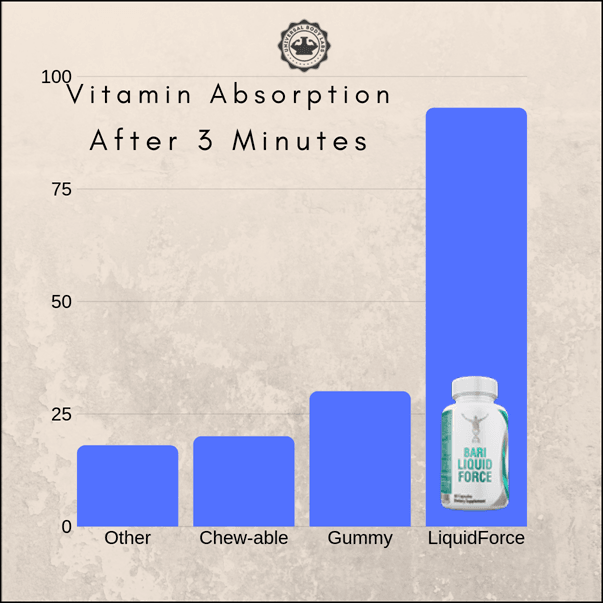
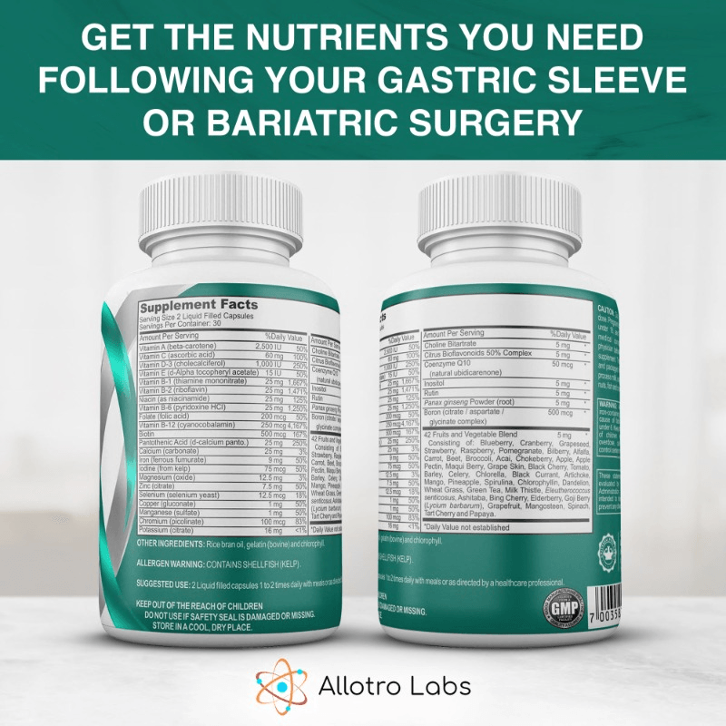

Navigating the world of supplements and meal replacement options from nutritional product companies after bariatric surgery can feel like wandering through a maze of multiple pills and tablets without a map. On one hand, you're told that your new, smaller stomach, supported by high protein meal replacement tablets and tasting, will help you shed pounds and lead a healthier life. On the other hand, there's this daunting task of making sure you get all the nutrients your body screams for but can't quite handle in large meals anymore, so turning to tablets as a certified buyer might be a viable solution. That's where bariatric vitamins swoop in to save the day – they're not just any vitamins; they're your ticket to ensuring that despite eating less or relying on meal replacement, you're nourishing your body more effectively than ever before. So let’s dive into why these specialized supplements are non-negotiable for anyone on the journey to reclaiming their health post-surgery.
Bariatric surgery changes how your body handles food. This can lead to nutritional deficiencies. Bariatric vitamins are designed to prevent these issues.
After surgery, your stomach is smaller or bypassed. You eat less and absorb fewer nutrients. Common deficiencies include vitamin B12, iron, calcium, and vitamin D. These are crucial for energy, bone health, and overall well-being.
To combat this problem, doctors recommend bariatric-specific multivitamins. They have higher amounts of key nutrients than standard multivitamins do.
Taking the right vitamins helps you avoid fatigue, anemia, osteoporosis, and other complications related to nutrient shortages.
Healing after bariatric surgery isn't just about the incisions closing up. Your entire body needs to recover from a major change in how it processes food.
Specialized vitamins aid in faster and healthier recovery post-surgery.
They ensure your body gets essential nutrients in forms it can easily absorb despite altered digestion pathways. For example:
Following a prescribed vitamin regimen can significantly reduce recovery time and improve outcomes.
The digestive system works differently after bariatric surgery. It's not just about eating less; it's also about absorbing what you eat more efficiently.
Standard multivitamins often don't meet these unique needs because they're made for people with normal digestive systems.
Bariatric vitamins are formulated considering:
This careful formulation ensures that patients get exactly what their bodies need without excess that might cause discomfort or harm.
Vitamin B12 plays a crucial role in maintaining energy levels and proper nerve function. After bariatric surgery, the body's ability to absorb vitamin B12 decreases significantly. This can lead to fatigue and nervous system issues if not addressed.
To prevent these problems, supplementing with vitamin B12 is key. It helps convert food into glucose, which gives you energy. Also, it supports the health of your nerve cells. You might find it as part of a multivitamin or as a standalone supplement.
Vitamin D and calcium work together to support bone health. They are especially important after bariatric surgery when nutrient absorption is compromised.
Calcium is essential for building strong bones and teeth. Without enough vitamin D, your body can't absorb calcium effectively. So, taking both ensures your bones stay healthy and strong.
You can get these nutrients from dairy products or supplements designed for post-bariatric patients. Remember to check with your doctor on the right dosage for you.
Iron is vital in preventing anemia—a common issue among post-bariatric surgery patients due to reduced food intake and altered digestion.
Anemia makes you feel tired all the time because your body isn’t making enough red blood cells to carry oxygen efficiently. Supplementing with iron helps boost red blood cell production keeping anemia at bay. Foods like spinach, beans, and fortified cereals are good sources too but may not be enough alone after surgery.

After bariatric surgery, your body undergoes significant changes. One of the most crucial adjustments involves your diet, especially in how you consume protein. This nutrient is vital for tissue repair and muscle maintenance during your weight loss journey.
Eating enough protein can be challenging after surgery due to reduced stomach capacity. Yet, it's essential for healing and keeping your muscles strong as you lose weight. Incorporate protein-rich foods like lean meats, eggs, and dairy into every meal. For some, bariatric vitamins with added protein may be necessary to meet their daily goals.
Protein shakes are a popular option too. They're easy on the stomach while providing the needed nutrients. Remember to choose low-sugar options to avoid unnecessary calories.
Calcium plays a key role in maintaining bone health, an aspect that becomes even more critical after bariatric surgery. Due to alterations in digestion and absorption post-surgery, there's an increased risk of bone density loss.
To combat this risk, boosting calcium intake is advised. Dairy products are a good source but might not always suit everyone post-surgery due to lactose intolerance issues or personal dietary preferences.
Here's where bariatric vitamins specifically formulated with higher calcium levels come into play:
Besides supplements, incorporating calcium-fortified foods like certain cereals or plant-based milk can help maintain optimal levels.
The timing of taking these supplements matters just as much as what you take. Proper scheduling ensures maximum nutrient absorption without interfering with each other’s uptake mechanisms.
For instance:
After addressing protein and calcium needs, it's crucial to focus on iron and kidney health. These elements play significant roles in your post-surgery journey.
Monitoring iron levels is key. Too much or too little can cause problems.
Iron overload can harm your organs. It's rare but serious. On the other hand, deficiency leads to anemia, making you feel tired and weak.
To stay balanced, eat iron-rich foods like spinach and red meat. Supplements might be needed too. Always consult with a healthcare provider before starting any new supplement.
Regular blood tests are essential. They help track your iron levels accurately. This way, you can adjust your diet or supplements as needed.
Kidneys remove waste from your body. They need proper care after surgery.
Hydration is critical for kidney health. Aim for at least 64 ounces of water daily unless advised differently by your doctor.
Nutrition also supports kidneys. Focus on fresh fruits, vegetables, and lean proteins while avoiding processed foods high in sodium.
Blood tests are recommended here as well. They check how well your kidneys are working.

Omega-3 fatty acids are key players in heart health. They help reduce the risk of heart disease significantly. Found in fish like salmon and trout, they're a must-add to your diet.
Eating fish twice a week is recommended. This simple change can make a big difference in your health. Studies show omega-3s lower blood pressure and decrease triglycerides.
A low-sodium diet is crucial for managing blood pressure. High salt intake can raise blood pressure, leading to heart issues. It's wise to limit processed foods as they often contain high sodium levels.
Start reading food labels to monitor your sodium intake better. Aim for less than 2,300 milligrams a day, as advised by health experts. Small steps like using herbs instead of salt for flavoring can have significant benefits.
Fiber-rich foods play an essential role in cholesterol management. Foods such as oats, beans, and fruits are excellent fiber sources. Incorporating these into your daily meals helps lower bad cholesterol levels. A study suggests that adding just 5 grams of soluble fiber per day can improve heart health.
To sum up, focusing on nutrition is vital for promoting heart health after addressing iron and kidney concerns from the previous section on bariatric vitamins. Remember:
Chewable vitamins have become a popular choice for individuals who have undergone bariatric surgery. These vitamins are easier to digest, making them an ideal option post-surgery.
Nutritional product companies now offer chewable multivitamins in various delicious flavors. This variety ensures that taking your daily supplements is not only beneficial but also enjoyable. From fruity to minty options, there's a flavor out there for everyone.
For those who find swallowing pills challenging, liquid supplements present a viable alternative. They are easy to consume and can be mixed with drinks or taken alone.
Liquid supplements come in several tasty flavors too. This makes them more palatable and increases the likelihood of consistent use. Nutritional support doesn't have to be unpleasant; with the right products, it can even be something you look forward to.
While chewables and liquids are great alternatives, traditional tablets remain a staple in supplement intake for many. Tablets often come in high-potency formulations providing comprehensive nutritional support in just one or two doses per day.
However, some people might need to take multiple pills throughout the day depending on their specific needs and the potency multivitamin they choose. Shopping around for the right products will help you find an option that fits your lifestyle best.
Bariatric patients often face challenges with nutrient absorption. This is where time-released supplements make a big difference. They slowly release vitamins and minerals over time. This method ensures a steady flow of nutrients.
Patients no longer have to worry about taking multiple pills throughout the day. A single dose can provide all-day coverage. It's especially helpful for those who've undergone bypass surgery, as their bodies might struggle more with nutrient absorption.
The development of all-in-one multivitamin options has been a game-changer for convenience. Imagine getting all your required nutrients from one pill or shake! These products are designed to meet the specific needs of bariatric patients, ensuring they receive a balanced mix of vitamins and minerals.
All-in-one options also reduce the hassle and expense of buying multiple supplements. Patients find it easier to stick to their nutrition plans when it's simplified like this. Plus, these multivitamins often include high protein content, which is crucial for recovery and maintenance after surgery.
Personalization has reached bariatric nutrition through genetic testing. By analyzing a patient’s DNA, experts can identify unique nutritional needs and potential deficiencies. This allows for the creation of personalized nutrition plans that cater specifically to an individual's requirements. It takes into account how different bodies may absorb nutrients at varying rates or need different amounts due to genetic factors.
For example:
These tailored plans ensure that each patient gets exactly what they need for successful weight management post-surgery.
Subscription services have revolutionized how we manage our bariatric vitamins. They offer a convenient way to ensure you never run out of essential supplements. Imagine not having to remember when to buy your next bottle of vitamins.
These services work by automatically sending you a new supply before your current one runs out. You set the frequency and quantity according to your needs. This means no more last-minute rushes to the store or forgetting to reorder in time.
Mobile apps are another game-changer for managing vitamin intake after bariatric surgery. They help track what vitamins you've taken each day and remind you when it's time for the next dose.
Some apps go further, offering personalized advice based on your specific nutritional requirements. They can adjust recommendations as your needs change over time, ensuring optimal health outcomes.
Pre-packaged daily vitamin packs are tailored specifically for individual needs, making them an ideal choice for those who've undergone bariatric surgery. Each pack contains exactly what you need for the day, eliminating guesswork.
This approach simplifies routines significantly. There’s no need to juggle multiple bottles or worry about taking the right amounts of each supplement.
Simplifying post-surgery nutrition doesn't just end with finding the right products like meal replacement options or subscribing to convenient delivery services; it also involves integrating these solutions into everyday life seamlessly.

After simplifying routines with nutrition solutions, the next crucial step is ensuring these routines are effective. It's vital to have regular nutritional assessments with a healthcare provider. These check-ups help track your progress and catch any issues early.
During these sessions, your provider can review your current health status and dietary intake. They might order blood tests to check for nutrient levels. This way, they can spot if you're lacking in specific vitamins or minerals. Early detection of deficiencies allows for quick adjustments to prevent long-term health problems.
Adjusting supplements based on these reviews ensures that you're always meeting your body's nutritional needs. It’s not just about taking supplements; it’s about taking the right ones at the right doses.
Your body changes over time, especially after bariatric surgery. So should your supplement regimen. Adjusting supplement types and dosages is key to keeping up with evolving post-surgery needs.
Initially, you might need higher doses of certain vitamins to compensate for rapid weight loss effects on nutrition absorption. Later on, as your body stabilizes, those needs may decrease or shift towards other nutrients.
Listen closely to what your body tells you and communicate openly with healthcare professionals about any new symptoms or concerns that arise—this aids in recognizing signs of deficiencies early for prompt intervention.
Here are common signs of vitamin deficiencies:
If you notice these symptoms, it could mean a need for adjustment in your supplementation plan.
Recognizing signs of deficiencies early is critical. The sooner an issue is identified, the quicker it can be addressed—preventing more severe complications down the line.
Prompt intervention often involves adjusting both diet and supplement intake under professional guidance.
Remember:
This proactive approach helps ensure that interventions are timely and effective.
Navigating your journey post-bariatric surgery can feel like you're piecing together a complex puzzle, but getting your nutrition right is a cornerstone piece. From ensuring you're stocked up on essential vitamins and minerals to adapting your diet for heart and kidney health, it's all about finding the balance that works for you. Think of it as tuning an instrument—getting each note right so the music plays beautifully.
Now, armed with knowledge about protein, calcium, iron, and more, plus the latest in bariatric nutrition innovations, you're set to make informed choices. Remember, it's not just about filling gaps; it's about creating a harmonious symphony of health. So, take action today. Start by reviewing your current nutritional intake and consider how the insights shared here can elevate your well-being. Your body—and future self—will thank you.
After bariatric surgery, your body's ability to absorb nutrients diminishes. Specialized vitamins fill the gap, ensuring you get the essential nutrients needed for a healthy recovery and long-term well-being.
Post-surgery, focus on vitamin B12, iron, calcium with Vitamin D3, and multivitamins specifically designed for bariatric patients. These support overall health and prevent nutritional deficiencies.
Your protein needs increase after surgery to help repair tissues and maintain muscle mass. Aim for 60-80 grams daily or as advised by your healthcare provider.
Yes! Proper intake of specific vitamins like B1 (thiamine) can support kidney function post-surgery. However, balance is key to avoid overloading your kidneys.
Absolutely! From chewables to liquids and even soft chews, there’s a variety of forms and flavors designed to suit every palate while making it easier to stick to your supplement regimen.
Focusing on low-fat proteins, high-fiber foods along with omega-3 fatty acids from fish oil supplements can bolster heart health alongside your prescribed vitamin regimen.
The world of bariatric nutrition constantly evolves with new formulations that enhance absorption rates or offer combined nutrients in one dose—making it simpler than ever to meet dietary requirements post-surgery.